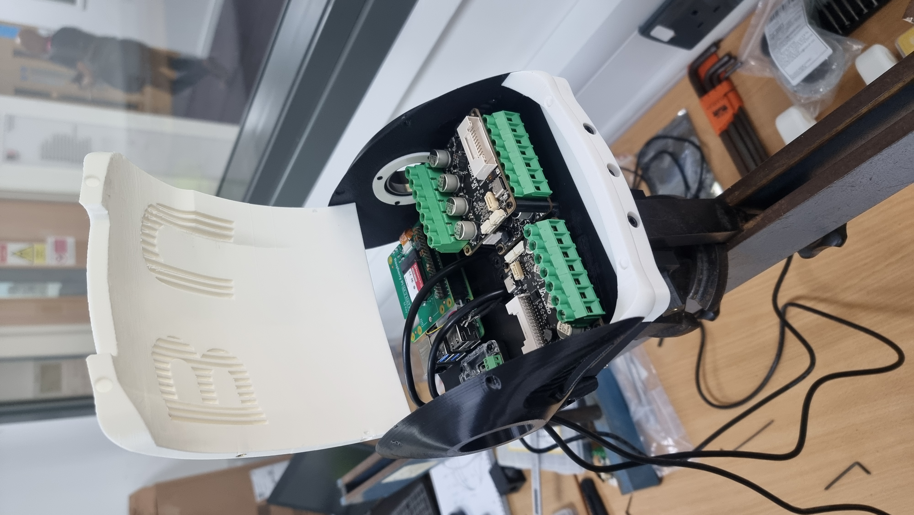
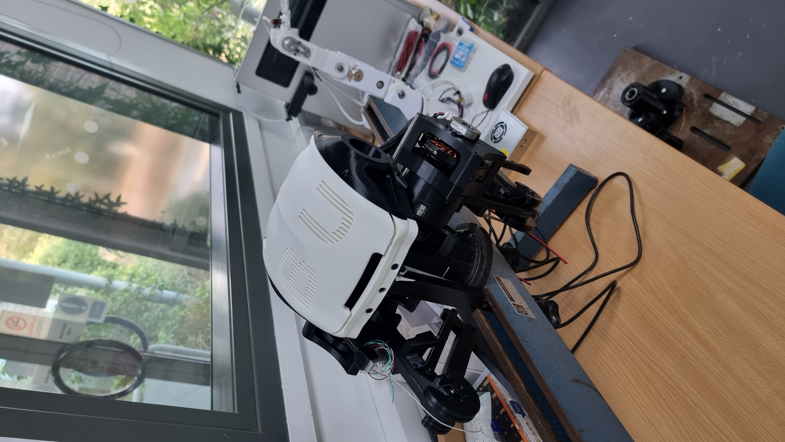
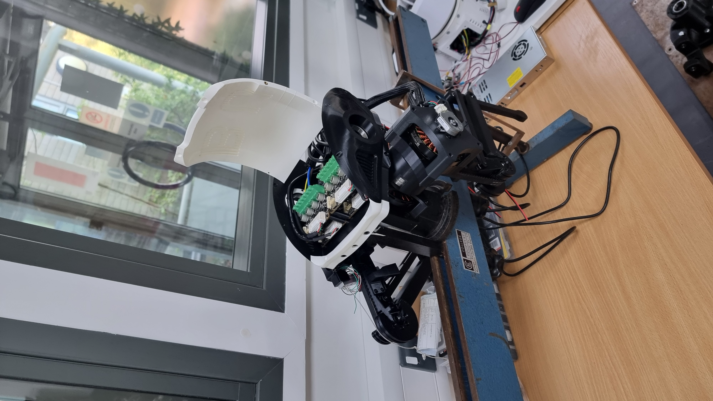
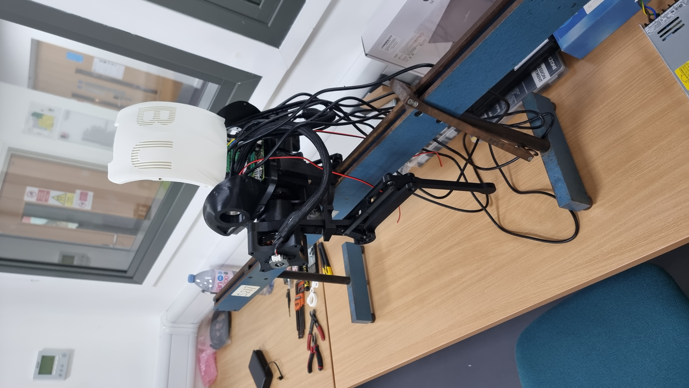
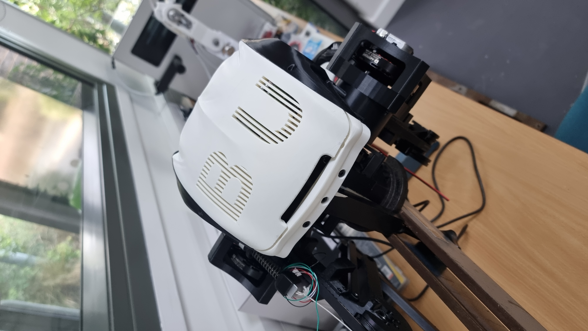
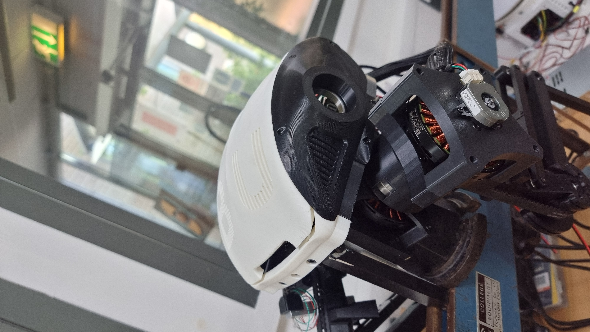
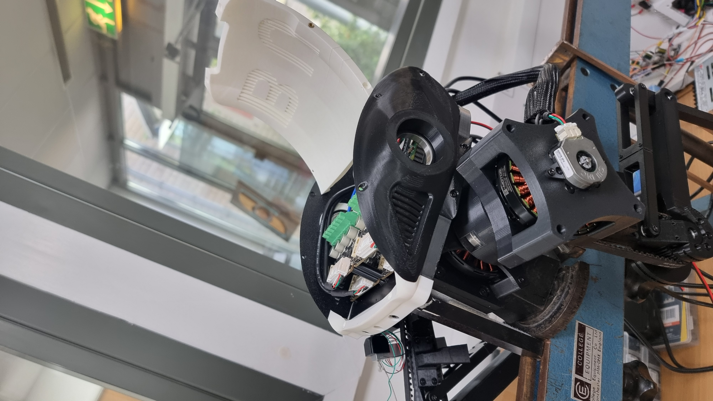
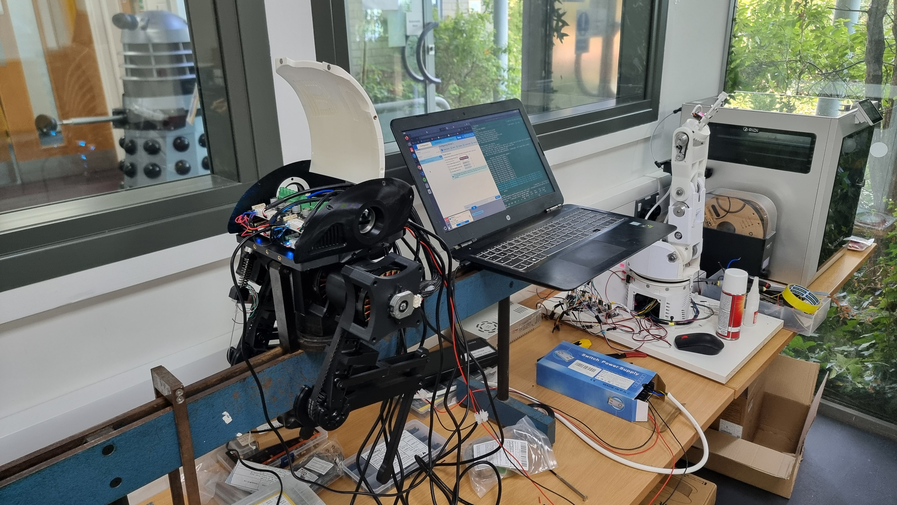

STATUS
in progress
A boom-constrained, 2-DOF-per-leg planar bipedal robot with a passive parallelogram leg linkage, built for my MSc dissertation. Custom mechanical design, ROS2 (Jazzy) software stack, ODrive/CAN torque-mode actuation, Bezier foot-trajectory gait system, Pinocchio inverse dynamics, and Gazebo Harmonic simulation — single-leg hardware-validated, full simulation running.
PiB is a planar bipedal robot constrained to move in a vertical plane via a boom, pivoting around a central mast. Its architecture matches the canonical RABBIT platform from academic literature: a point-foot, underactuated biped, the platform on which Hybrid Zero Dynamics (HZD) was originally developed and validated. Matching that mechanical lineage keeps that control theory reachable as a long-term goal, even though the current control approach is more direct (see Control Strategy below).
Each leg has 2 actuated degrees of freedom: hip (swing, X-axis, ±90°) and knee (bend, X-axis, −8.9° to +43.3°), both rotating about the boom's sagittal axis. A passive parallelogram 4-bar linkage keeps the foot parallel to the ground through the full knee range with no extra actuator: as the knee bends, a loop-closure constraint on the parallel rod cancels the rotation automatically.


All structural components are 3D printed. The torso houses the hip motors and central electronics; the most recent revision reworks the outer shell for a cleaner cable path and a stiffer motor mount interface. Motor placement at the knee is proximal (motor body near the hip) to reduce the leg's distal inertia and keep the mass distribution favourable for swing dynamics — a decision informed directly by the RABBIT literature.

Physical parameters, measured from the current build:

Each of the four joints is driven by its own single-axis ODrive S1 controller, addressed by CAN node_id (0–3) over one shared bus at 1 Mbps. Motors are T-Motor MN7005-32 KV115 units (24N28P → 14 pole pairs). Joint position uses CUI AMT21 absolute encoders, which remember true physical position across power cycles once a one-time software zero calibration has been run.
The vendored odrive_ros2_control driver declares a gear_ratio parameter in the URDF's <ros2_control> block, but silently never applies it: it treats the position command/state interface as raw motor-shaft radians, 1:1. Sent straight through, any joint-space angle moves the real joint by only 1/gear_ratio of what was intended.
Rather than patch the vendored C++ driver, the fix lives in one place in Python: gear_ratios.py converts joint angle ↔ motor-shaft radians for every node that talks to real hardware, gated by a use_motors flag. A read-side counterpart, joint_state_corrector.py, republishes a gear-ratio-corrected /joint_states_corrected topic so RViz shows real joint angles instead of raw motor-shaft values. The knee gear ratio was determined empirically through hardware testing: 7.353 → 8.667 → 8.333, with the negative sign (direction reversal) also discovered by testing against the physical leg.
The ROS2 workspace spans six packages: biped_description (URDF, SDF, worlds, launch files, ros2_control config), biped_control (IK, calibration, gear-ratio handling), foot_trajectory_planner (Bezier library and interactive 17-CP designer), biped_gait_generation (bipedal gait coordinator), and ros_odrive (vendored ODrive driver).
Simulation runs on Gazebo Harmonic with the Bullet physics engine — a deliberate choice over the default DART engine, which rejects closed kinematic loops entirely. Bullet handles the parallelogram as a constraint between two already-parented rigid bodies, making true four-bar loop closure possible in simulation. The SDF model (biped.sdf) is hand-authored rather than auto-generated, to use correct Harmonic material conventions and guarantee the plugin placement order. The model has 19 joints (9 fixed structural + 10 revolute), including par_lower_joint — a direct revolute from the par-link to the foot that closes the four-bar loop physically rather than through a software mimic.

Trajectory validation uses Pinocchio 4.0 for model-based inverse dynamics. A gravity profiler (gravity_profile.py) loads the designer's control points, reconstructs the full stance+swing Bezier trajectory via the same IK functions used in hardware, enforces the parallelogram mimic constraints in joint space, and computes G(q) at every sample along the gait cycle.
A full RNEA pass (replay_trajectory.py) extends this to complete inverse dynamics torques — inertial, Coriolis, and gravity — overlaid with the gravity-only baseline. The planned validation step is running both Pinocchio and Gazebo simultaneously on the same trajectory and comparing their joint torque outputs: divergence pinpoints model errors before they reach hardware.
The leg is a 3R planar arm with a parallelogram constraint (θankle = −θknee), which collapses to an equivalent closed-form 2R problem, solved analytically:
cos(φ2) = (py² + pz² − L1² − L2²) / (2·L1·L2)
θhip = atan2(py, −pz) − atan2(L2sinφ2, L1+L2cosφ2)
solve_ik() raises an exception for any target outside joint limits or physical reach — the core safety net relied on by every node that builds a trajectory.
Foot trajectories are parameterised as Bezier curves in foot-space, designed with an interactive 17-control-point tool that renders real-time RViz markers and enforces bipedal step-height constraints. The designer saves control points to disk; the gait nodes reload them at runtime, sample the curve at 250 Hz, run IK at each sample, and stream joint angles to the trajectory controllers via ROS2 action goals. The physical right leg has successfully tracked the Bezier swing trajectory — the first hardware-validated gait motion on the project.
What's built and validated:
par_lower_joint (under verification)What's next, in order:







